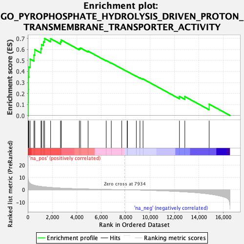

| | | Dataset | DE_genes2 |
| Phenotype | NoPhenotypeAvailable |
| Upregulated in class | na_pos |
| GeneSet | GO_PYROPHOSPHATE_HYDROLYSIS_DRIVEN_PROTON_TRANSMEMBRANE_TRANSPORTER_ACTIVITY |
| Enrichment Score (ES) | 0.6997657 |
| Normalized Enrichment Score (NES) | 2.203032 |
| Nominal p-value | 0.0 |
| FDR q-value | 0.0020744568 |
| FWER p-Value | 0.014 |
Table: GSEA Results Summary

Fig 1: Enrichment plot: GO_PYROPHOSPHATE_HYDROLYSIS_DRIVEN_PROTON_TRANSMEMBRANE_TRANSPORTER_ACTIVITY
Profile of the Running ES Score & Positions of GeneSet Members on the Rank Ordered List
Fig 2: GO_PYROPHOSPHATE_HYDROLYSIS_DRIVEN_PROTON_TRANSMEMBRANE_TRANSPORTER_ACTIVITY: Random ES distribution
Gene set null distribution of ES for GO_PYROPHOSPHATE_HYDROLYSIS_DRIVEN_PROTON_TRANSMEMBRANE_TRANSPORTER_ACTIVITY